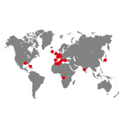

Annabelle Grisard
Webdesigner / Intégrateur
"L’imagination est plus importante que la connaissance. Car la connaissance est limitée, alors que l’imagination embrasse l’univers tout entier."
contactez-moi
Mes compétences
Design
Web
Mon expérience
- 2018-2019 : Salarié chez La Cave Saint Vincent, caviste à Flers.
- 2017-2018: Alternance d’un an à Monagraphic en tant que Webdesigner Intégrateur.
- 2016 : Infocob Solutions, Agence Web, 6 semaines. Création de logo, intégration, mock-up de site, panneaux publicitaires pour l’agence.
- 2015-2017 : Emploi saisonnier, vendeuse en poissonnerie (2mois) et vendeuse en magasin de vêtement (1mois).
- Depuis 2013 : Babysitting dans différente familles.

Mes formations
- 2017-2018 : Titre de WebDesigner RNC Niveau III à l’IMIE Rennes.
- 2017-2018 : 2 ème année Développeur Logiciel option Web à l’IMIE Rennes en alternance à Monagraphic, Angers.
- 2015-2017 : BTS design graphique option Web en 2 ans, LISAA, Nantes.
- 2014-2015 : Mise à niveau en arts appliqués, LISAA (école de design), à Nantes.
- 2013-2014 : Baccalauréat scientifique, option science de l’ingénieur, et spécialité informatique et science du numérique, au Lycée saint Thomas d’Aquin, Flers.
Langues
- Français: langue natale.
- Anglais: niveau B2, et TOEIC en 2014 avec 820 points.
- Espagnol: les bases de la conversation.

Intérets
DESSIN Tennis BATTERIE Voyages guitare-basse MANGAS science-fiction FANTASY JEUX VIDEOS integration JEUX DE ROLES séries tatouage Doctor Who Multimédia web
